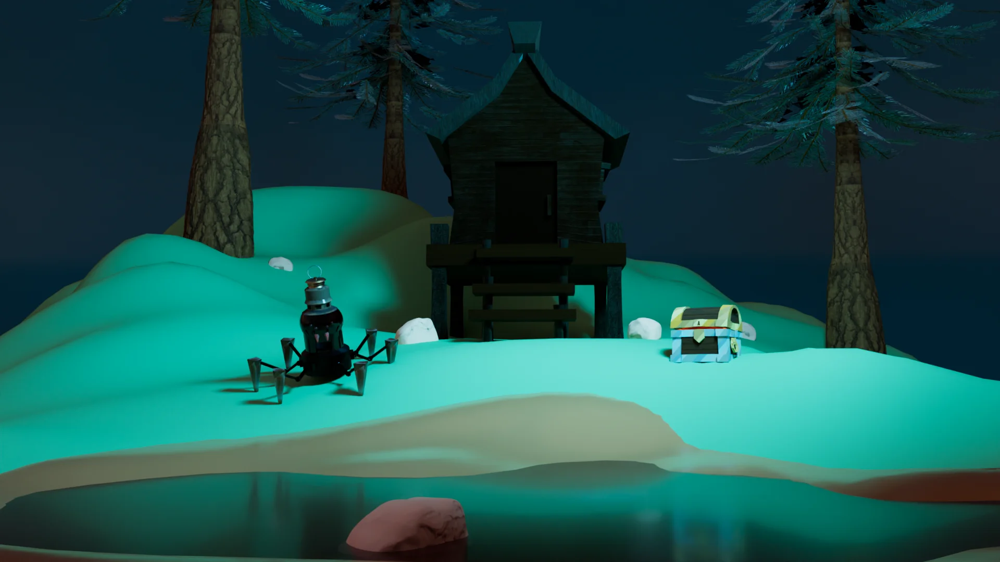
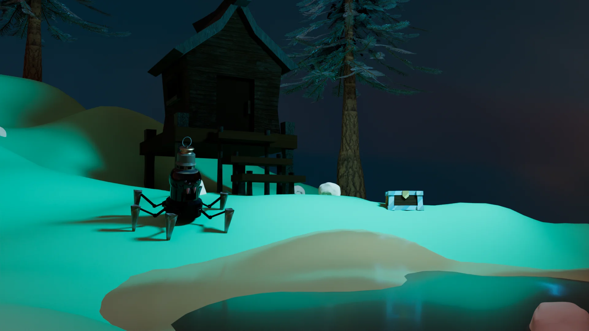
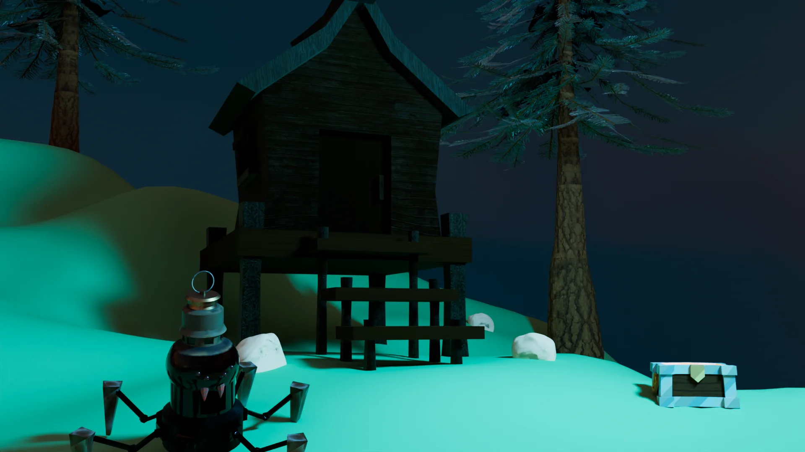
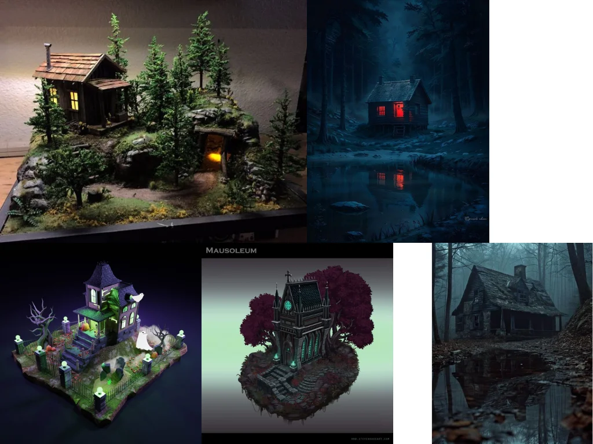

Project type:
Environment Texturing project in Substance Painter and Maya.
Project description:
In this project, I continued developing my Witch Shack Diorama, bringing together individual assets I created in previous assignments—including the treasure chest, pine tree, witch shack, dragon dagger, spider lantern, and rock—into a fully realized environment. The goal was to craft a creepy, atmospheric forest scene centered around a mysterious witch’s shack.
------------------
To build a cohesive base, I used a sand and wood platform and a water shader, both modeled by my instructor Liz Hejny. These foundational elements helped unify the diorama and establish the natural setting.
------------------
In addition to set dressing and composition, this project also emphasized shader experimentation. As I developed environment assets, I intentionally incorporated objects that allowed me to explore a variety of material types such as reflective surfaces, glowing elements, and organic textures. This approach gave me the opportunity to experiment with custom shaders and learn how different materials contribute to the mood and storytelling of an environment.
Date:
March 10 - 30, 2025
Role:
3D Sculptor, Texture Painter, and 3D Modeler.
Project highlight:
Renders from different angles:



Reference:

Reflection:
This project helps me learnt how to use sculpting and painting tools in Mudbox. It takes a lot of intention to details to make the rock looks organic and like I intended.
I found it challenging to make the details of the obsidian stand out because the rock is dark.